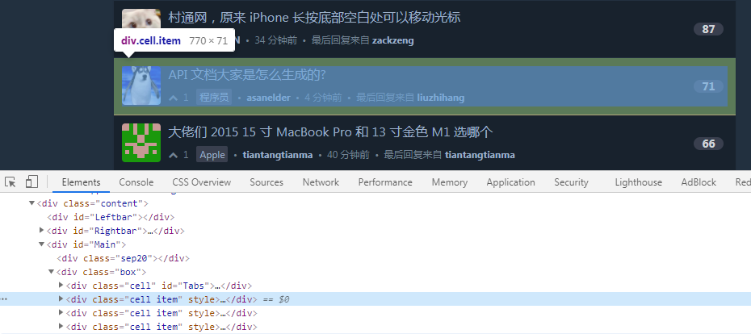

这里用来收藏一下看到的优雅的、惊为天人的代码
json array 过滤指定的属性 1 2 3 4 5 6 7 8 9 10 11 12 13 14 15 16 17 18 19 20 21 22 23 24 25 26 27 28 29 30 31 32 33 34 let data = ["id" : "1234" ,"key1" : "val1" ,"key2" : "val2" ,"name" : "someone" ,"age" : 39 "id" : "1234" ,"key1" : "val1" ,"key2" : "val2" ,"name" : "someone" ,"age" : 39 "id" : "1234" ,"name" : "someone" ,"age" : 39 "id" : "1234" ,"name" : "someone" ,"age" : 39 map (({ key1, key2, ...other } ) => other)
删除v站包含特定关键词的主题

1 document.querySelectorAll(".cell.item" ) .for Each(node => node .textContent .includes ("王伟" ) && node.remove() )
获取数组中的最大值 1 2 let values = [1 , 2 , 5 , 7 , 1 , 6 , 8 ];log (Math.max (...values )) // 8
数组中的值求和 1 2 const arr = [1 , 2 , 3 , 4 , 5 ]sum = arr.reduce ((prev, current, index, arr ) => prev + current);
js精度丢失问题
计算机存储双精度浮点数需要先把十进制数转换为二进制的科学记数法的形式，然后计算机以自己的规则{符号位+(指数位+指数偏移量的二进制)+小数部分}存储二进制的科学记数法,因为存储时有位数限制（64位），并且某些十进制的浮点数在转换为二进制数时会出现无限循环，会造成二进制的舍入操作(0舍1入)，当再转换为十进制时就造成了计算误差。
参考资料
1 2 3 4 5 6 7 function add (num1, num2 ) {split ('.' )[1 ] || '' ).length split ('.' )[1 ] || '' ).length pow (10 , Math.max (num1Digits, num2Digits))return (num1 * baseNum + num2 * baseNum) / baseNum
加减乘除运算
1 2 3 4 5 6 7 8 9 10 11 12 13 14 15 16 17 18 19 20 21 22 23 24 25 26 27 28 29 30 31 32 33 34 35 36 37 38 39 40 41 42 43 44 45 46 47 48 49 50 51 52 53 54 55 56 57 58 59 60 61 62 63 64 65 66 67 68 69 70 71 72 73 74 75 76 77 78 79 80 81 82 83 84 85 86 87 88 89 90 91 92 93 94 95 96 97 98 99 100 101 102 103 104 105 106 107 108 109 110 111 112 113 114 115 const operationObj = {getParam (args ) {return Array .prototype concat .apply ([], args);multiplier (x ) {let parts = x.toString ().split ('.' );return parts.length < 2 ? 1 : Math .pow (10 , parts[1 ].length );correctionFactor (let args = Array .prototype slice .call (arguments );let argArr = this .getParam (args);return argArr.reduce ((accum, next ) => {let num = this .multiplier (next);return Math .max (accum, num);1 );add (...args ) {let calArr = this .getParam (args);let corrFactor = this .correctionFactor (calArr);let sum = calArr.reduce ((accum, curr ) => {return accum + Math .round (curr * corrFactor);0 );return sum / corrFactor;subtract (...args ) {let calArr = this .getParam (args);let corrFactor = this .correctionFactor (calArr);let diff = calArr.reduce ((accum, curr, curIndex ) => {if (curIndex === 1 ) {return Math .round (accum * corrFactor) - Math .round (curr * corrFactor);return Math .round (accum) - Math .round (curr * corrFactor);return diff / corrFactor;multiply (...args ) {let calArr = this .getParam (args);let corrFactor = this .correctionFactor (calArr);map ((item ) => {return item * corrFactor;let multi = calArr.reduce ((accum, curr ) => {return Math .round (accum) * Math .round (curr);1 );return multi / Math .pow (corrFactor, calArr.length );divide (...args ) {let calArr = this .getParam (args);let quotient = calArr.reduce ((accum, curr ) => {let corrFactor = this .correctionFactor (accum, curr);return Math .round (accum * corrFactor) / Math .round (curr * corrFactor);return quotient;console .log (operationObj.add (0.1 , 0.7 )); console .log (operationObj.subtract (0.3 , 0.2 )); console .log (operationObj.multiply (0.7 , 180 )); console .log (operationObj.divide (0.3 , 0.1 ));
统计页面一共有多少种HTML标签 1 new Set ([...document .querySelectorAll ('*' )].map(n => n.nodeName)).size
批量给对象中的value设为空 1 2 3 4 5 6 7 8 9 const obj = {"holiday" : "true" ,"name" : "元旦" ,"wage" : "3" ,"date" : "2022-01-01" ,"rest" : "85" Object .for Each(item => obj [item ] = '')
格式化时间 是的，几乎算是每个前端写的最多的代码了。但是最近看到微信小程序demo里面的代码，感慨其优雅。
1 2 3 4 5 6 7 8 9 10 11 12 13 14 15 16 17 18 19 20 21 22 23 24 const formatTime = (date {year = date .getFullYear()month = date .getMonth() + 1 day = date .getDate()hour = date .getHours()minute = date .getMinutes()second = date .getSeconds()return `${[year , month , day ].map (formatNumber).join("-" )} ${[ hour , minute , second , ] .map (formatNumber) .join(":" )} `(n ) => {return n[1 ] ? n : `0${n} ` console .log ((formatTime(new Date ())));
可拓展的格式化时间 预先定义一个对象，key为可能的正则表达式，即y、M、d、H、m、s、q（季度）、S（毫秒）等，value为每个正则表达式对应的实际值。
1 2 3 4 5 6 7 8 9 10 11 12 13 14 15 16 17 18 19 20 21 22 23 24 25 26 27 28 Date .prototype format = function (fmt ) {var o = {"M+" : this .getMonth () + 1 , "d+" : this .getDate (), "H+" : this .getHours (), "m+" : this .getMinutes (), "s+" : this .getSeconds (), "q+" : Math .floor ((this .getMonth () + 3 ) / 3 ), "S" : this .getMilliseconds () if (/(y+)/ .test (fmt)) {replace (RegExp .$1 , (this .getFullYear () + "" ).substr (4 -RegExp .$1 .length ));for (var k in o) {if (new RegExp ("(" + k + ")" ).test (fmt)) {replace (RegExp .$1 , (RegExp .$1 .length == 1 ) ? (o[k]) :"00" + o[k]).substr (("" + o[k]).length )));return fmt;var d = new Date ();console .log (d.format ('yyyy-MM-dd HH:mm:ss.S' )); console .log (d.format ('yyyy-MM-dd' )); console .log (d.format ('yyyy-MM-dd q HH:mm:ss' ));
比较日期大小 如果是时间戳则直接比较数字大小
1 2 3 4 5 6 7 8 function CompareDate (dateStr1, dateStr2 ) {var date1 = dateStr1.replace (/-/g , "\/" );var date2 = dateStr2.replace (/-/g , "\/" );return new Date (date1) > new Date (date2);"2018-07-30 7:31" , "2018-07-31 7:30" ); "2018-08-01 17:31" , "2018-08-01 17:30" );
还有另外一种办法，回顾一下为什么可以用数字和对象做比较呢？JavaScript会自动做类型转换，对象的话会调用valueOf()函数转换为时间戳
1 2 3 4 5 6 7 8 9 setInterval(function () {Date .now() >= new Date("2016-09-12 15:59:00" )) {"#seckillQuantity" ).val(1 )".buyButtons.J_buyButtons" ).click()".answerList" ).children().eq(0 ).html()"#randomAnswer" ).val(value )".answer-button" ).children().eq(0 ).click()10 )
计算当前日期前后N天的日期 假如知道一个日期为2018-08-01，需要求出该时期前、后3天的日期。前3天日期为2018-07-29，后3天日期为2018-08-04。
1 2 3 4 5 6 7 8 9 10 11 12 13 14 15 16 17 18 19 20 21 function GetDateStr(AddDayCount) {new Date() ;Date(dd .getDate () + AddDayCount); FullYear() ;Month() + 1 ) < 10 ? "0" + (dd.getMonth() + 1 ) : (dd.getMonth() + 1 );Date() < 10 ? "0" + dd.getDate() : dd.getDate() ; "-" + m + "-" + d;"半年前：" + GetDateStr(-180) ); "三月前：" + GetDateStr(-90) ); "一月前：" + GetDateStr(-30) ); "昨天：" + GetDateStr(-1) ); "今天：" + GetDateStr(0) ); "明天：" + GetDateStr(1) ); "后天：" + GetDateStr(2) ); "一月后：" + GetDateStr(30) ); "三月后：" + GetDateStr(90) ); "半年后：" + GetDateStr(180) );
计算两个日期的时间差 设计的规则是向下取整法。大于1天，不满2天的按照1天处理；大于1小时，不满2小时的按照1小时处理。
计算两个日期的时间差的主要思路如下。
1 2 3 4 5 6 7 8 9 10 11 12 13 14 15 16 17 18 19 20 21 22 23 24 25 26 27 28 29 30 31 32 33 function GetDateDi ff(startTime, endTime, diffType ) /\-/g , "/" );/\-/g , "/" );var sTime = new Date (startTime); var eTime = new Date (endTime); var divNum = 1 ;switch (diffType) {case "second" :1000 ;break ;case "minute" :1000 * 60 ;break ;case "hour" :1000 * 3600 ;break ;case "day" :1000 * 3600 * 24 ;break ;default :break ;return parseInt ((eTime.getTime() - sTime.getTime()) / parseInt (divNum));var result1 = GetDateDiff("2018-07-30 18:12:34" , '2018-08-01 9:17:30' , "day" );var result2 = GetDateDiff("2018-07-29 20:56:34" , '2018-08-01 9:17:30' , "hour" );console .log("两者时间差为：" + result1 + "天。" );console .log("两者时间差为：" + result2 + "小时。" );
获取字符串中所有的数字，并进行求和 由于平常使用小米笔记记账，全是文本类型，月底汇总时手动相加显得太蠢，就写了一段代码来实现。
1 2 3 4 5 6 7 8 9 10 11 12 13 14 15 16 function getNumFormStr (str ) {replace (/[\u4e00-\u9fa5\s]/g , ' ' )return resultfunction str2NumArray (str ) {/\d+(\.\d+)?/g ).map (Number ).sort ((a, b ) => b - a);return ressum = str2NumArray(str).reduce ((prev, current, index, arr ) => prev + current); console .log (sum );
1 2 3 4 5 6 7 8 9 10 11 12 13 14 15 16 function extracNumberAndCalcSum (str ) {const regex = /(\S+)\s+([\d.]+)/g ;const matches = str.matchAll (regex);const res = [];let sum = 0 ;for (const match of matches) {const word = match[1 ];const num = parseFloat (match[2 ]);if (!isNaN (num)) {push ({ word, num });return { res, sum }
扁平数据结构转Tree 实际开发中经常遇到的问题，将后端返回的数据转成tree结构。
1 2 3 4 5 6 7 8 9 10 11 12 13 14 15 16 17 18 19 20 21 22 23 24 25 26 27 28 29 30 31 32 33 const list = [id: 1, name : '部门1' , parentId : 0 },id: 2, name : '部门2' , parentId : 1 },id: 3, name : '部门3' , parentId : 1 },id: 4, name : '部门4' , parentId : 3 },id: 5, name : '部门5' , parentId : 4 },"id" : 1 ,"name" : "部门1" ,"pid" : 0 ,"children" : ["id" : 2 ,"name" : "部门2" ,"pid" : 1 ,"children" : []"id" : 3 ,"name" : "部门3" ,"pid" : 1 ,"children" : [
1 2 3 4 5 6 7 8 9 10 11 12 13 14 15 16 17 18 19 20 const convert = (arr ) => {map = new Map ();item =>map .set(item.id, item);item =>map .get(item.parentId);if (parent) {if (parent.children) {push (item);else {else {push (item);return result;